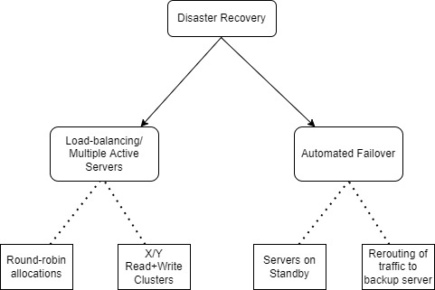

Module: SRM_PCOM7E_Aug_2022
Reflective Piece: Security Risk Management Aug 2022

Evaluation of the Final Project
The Final Project was a vast improvement that fleshed out the architecture and plans necessary to supprot the first assignment. The majority of the original assumptions from Unit 6's status document were built upon, and developed further to form a holistic executive summary.
Reflections on Security and Risk Management
The assignments themselves primarily comprised of assessing an e-commerce store and its supply chain network. As such, a primary research focus was on the Distribution Networks and Logistics, and how to mitigate all potential risks arising there from (Samvedi, 2013).
Threat Modelling Techniques
A variety of Threat Modelling techniques were purveyed, assessed and interpolated within the context of the curriculum. These includes the likes of STRIDE (Xin, 2014), OWASP (Falah et al, 2015), MS SDL Threat Modelling (Möckel, 2010) and Spiral Models (Ray, 2013). Various strategies for threat mitigation were examined and utilized to formulate solutions for enterprise risk architecture (Krahulec & Jurenka, 2015).

Quantitative Analysis
Quantitative modelling techniques such as TOPSIS (Roszkowska, 2011) and AHP (Bartusková, 2015) were reviewed in detail.

Business Continuity and Disaster Recovery
A Business Continuity plan was developed, based on statistical metrics that were done both manually as well as with Python APIs (Yadav, 2019) . By performing both manual and automated comparisons, similarities and offsets were delineated to confirm the accuracy of all calculations (Tsaur, 2011). Graphing was then performed extensibly to illustrate the different Risk categories, as well as their impacts and spheres of influence (Snedaker, 2013).
Disaster Recovery plans were examined in detail and extrapolated upon (Nollau, 2009). Diagrams were utilized to illustrate Load Balancing and Server Failover processes.
 Figure 4 - Load Balancing server architectureReflections on Individual Contribution
I contributed about 80% of diagrams. Deepak helped me extensively with the statistical interpetation. The vast majority of my work was intact.

Reflections on Experience as a Member of a Team
Meetings were conducted weekly, minutes were recorded by Demian Minutes. Effort was asymmetricly apparent, but I enjoyed working hard and strategically for the goal of the project.
Reflections on Professional Development
References
Bartusková, T. & Kresta, A. (2015). Application of AHP method in external strategic analysis of the selected organization. Procedia Economics and Finance, 30 : 146-154.
Belton, V. & Stewart, T.J., 2002. An Integrated approach to MCDA. In Multiple Criteria Decision Analysis: 331-343. Springer, Boston, MA.
Falah, B., Akour, M. & Oukemeni, S., (2015). An Alternative Threat Model-based Approach for Security Testing. International Journal of Secure Software Engineering (IJSSE), 6(3): 50-64.
Krahulec, J. & Jurenka, M., (2015). Business impact analysis in the process of business continuity management. Security and Defence Quarterly 6(1):29-36. [Accessed on 10 October 22]
Möckel, C. & Abdallah, A.E., (2010). Threat modeling approaches and tools for securing architectural designs of an e-banking application. In 2010 Sixth International Conference on Information Assurance and Security : 149-154. IEEE.
Nollau, B., (2009) Disaster recovery and business continuity. Computer & Software Validation, (44).
Ray, L.L., (2013). Security considerations for the spiral development model. International Journal of Information Management, 33(4) : 684-686.
Roszkowska, E. (2011) Multi-criteria decision making models by applying the TOPSIS method to crisp and interval data.,/i> Multiple Criteria Decision Making/University of Economics in Katowice, 6(1) : 200-230.
Samvedi, A., Jain, V. & Chan, F.T. (2013). Quantifying risks in a supply chain through integration of fuzzy AHP and fuzzy TOPSIS. International Journal of Production Research, 51(8):2433-2442.
Snedaker, S. (2013). Business continuity and disaster recovery planning for IT professionals. Newnes.
Tsaur, R.C. (2011). Decision risk analysis for an interval TOPSIS method. Applied Mathematics and Computation, 218(8): 4295-4304.
Xin, T. and Xiaofang, B. (2014). Online banking security analysis based on STRIDE threat model. International Journal of Security and Its Applications, 8(2): 271-282.
Yadav, V, Karmakar, S, Kalbar, P & Dikshit, A. (2019). PyTOPS: A Python-based tool for TOPSIS. Environmental Software. 9. 217-222. 10.1016/j.softx.2019.02.004.